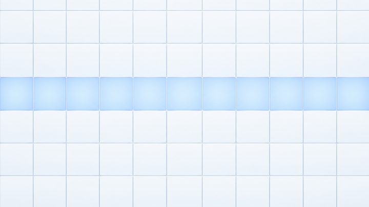

Complete bathroom
Aging-friendly smart bathroom package for care homes and homes
One plan for the whole room, so every part is chosen to work for an older user.

In one line
MULAN's aging-friendly smart bathroom package plans a whole bathroom around older users: a human presence sensor, warm lighting, a smart bath heater, anti-slip handrails, an SOS call button, a seated shower, a smart toilet with lift assist and a cabinet a wheelchair can roll under.
Who it's for
- Elderly-care operators furnishing care homes and senior apartments
- Distributors selling complete aging-friendly bathrooms
- Families adapting a parent's bathroom in one go
Problems it solves
- Parts bought from different suppliers that do not match in finish or function
- Bathrooms with no way to call for help after a fall
- Showers and toilets that need the user to stand or squat unaided
Features
Human presence sensor
Detects someone in the room.
Warm aging-friendly lighting
Soft light planned for older eyes.
Smart bath heater
Keeps the room warm while bathing.
Anti-slip handrails
Support along the shower and toilet.
SOS emergency call button
A call point inside the bathroom.
Seated shower
Bathe sitting or standing.
Smart toilet + lift assist
Helps the user sit down and stand up.
Wheelchair-accessible cabinet
A wheelchair can roll under the basin cabinet.
Specifications
- Built around 'Future elderly care, smart living'.Design concept
- Listed together in the 2025 product manual.8 parts, one plan
Source: 2025 product manual.
Frequently asked questions
What does the aging-friendly smart bathroom package include?
It includes a human presence sensor, warm aging-friendly lighting, a smart bath heater, anti-slip safety handrails, an SOS emergency call button, a seated shower, a smart toilet with a lifting assist device and a smart bathroom cabinet that a wheelchair can roll under. MULAN plans these as one bathroom rather than as separate purchases.
Who is the package designed for?
It is designed for older people and people with limited mobility who want to bathe and use the toilet safely. MULAN sells it to elderly-care operators, distributors and importers, and OEM brands that furnish care homes, senior apartments or private homes.
Can the package be adapted to my floor plan?
Send MULAN your room sizes and the number of bathrooms on WhatsApp. The team will confirm which parts fit and quote the package for your project. Final layouts depend on the space, so ask before ordering.
How do I get a price for the package?
MULAN quotes B2B prices on request. Message the team on WhatsApp at +86 136 6003 9128 with your market, the number of bathrooms and the parts you need.
Related articles
 Care projects
Care projectsCare home bathroom design requirements: an 8-part spec
An 8-part specification for age-friendly care-home bathrooms: space, floors, showering, toilets, grab bars, vanity, warmth and call systems.

Care projectsOne supplier or several for care-home bathrooms?
Single supplier or several for an aging-friendly bathroom project? Compare consistency, risk, cost control and after-sales, with a buyer checklist.
 Sourcing
SourcingJapan elderly care market: a guide for bathroom importers
Japan's elderly care market for bathroom products: official ageing and bathing-accident data, buyer channels, long-term care rules and supplier checks.
Ask for a quote or product sheet
Message the MULAN team on WhatsApp with the products, quantities and your market. B2B and OEM enquiries welcome.
WhatsApp us · +86 136 6003 9128